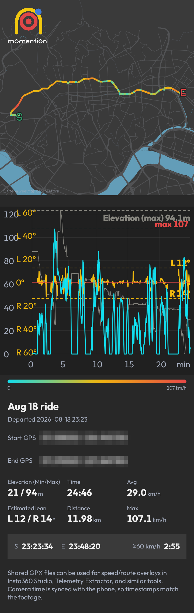

속도에 맞춰,액션캠을녹화 제어합니다.
라이딩의 모든 순간을 연결합니다.
카메라 연결
GPX 경로 기록
히트맵과 그래프
경로 비교
기록 공유
라이딩이 끝나도, 기록은 계속됩니다.
주행 기록

히트맵
경로 비교
화면 설명
- 1카메라 로고


선택한 카메라 브랜드를 표시합니다. 연결 중 탭하면 브랜드를 바꿉니다.
- 2GPS와 속도 모니터링
GPS 수신 상태를 표시합니다. 탭하면 속도 모니터링을 켜거나 끄며 카메라 연결은 유지됩니다.
- 3실시간 로그
연결·녹화 로그를 영어로 표시합니다. 최신순입니다.
- 4플로팅 버튼
플로팅 버튼으로 앱 제어가 가능해집니다.
- 5속도 표시 메인 버튼
녹색은 카메라 연결·녹화 대기, 빨간색은 녹화 중임을 알립니다. 수동 녹화도 지원합니다.
- 6자동 녹화 기준 속도
빨간 점: 녹화 시작 속도 · 초록 점: 정지 속도
- 7휴대폰 자세 표시
노란 점은 휴대폰의 중력 방향에 따라 이동합니다.
- 8연결 버튼
연결 작업을 시작하거나 재시도합니다. 작업 진행 중 다시 누르면 취소합니다.
- 9앱 종료
모든 서비스를 종료하고 앱을 즉시 종료합니다.
- 10설정
카메라 연결, 녹화 기준 속도와 앱 동작을 설정합니다.
- 11주행 경로
저장한 주행 경로를 확인하고 비교·공유합니다.
- 12로그 목록
저장된 로그를 열어 동작 내역을 확인합니다.
손목 위의 mOmentiOn
Apple Watch·Wear OS 지원. 손목에서 속도·녹화 상태를 확인하고 녹화를 제어하세요.
GET mOmentiOn
다음 주행을 준비하세요.
최신 시험 빌드: iOS 1.0.1 (40) · Android 1.0 (34).
등록된 계정으로 TestFlight 또는 Google Play에서 설치하세요.
Insta360·DJI 카메라는 Bluetooth로 제어하므로 휴대폰의 인터넷 Wi-Fi 연결을 유지할 수 있습니다.